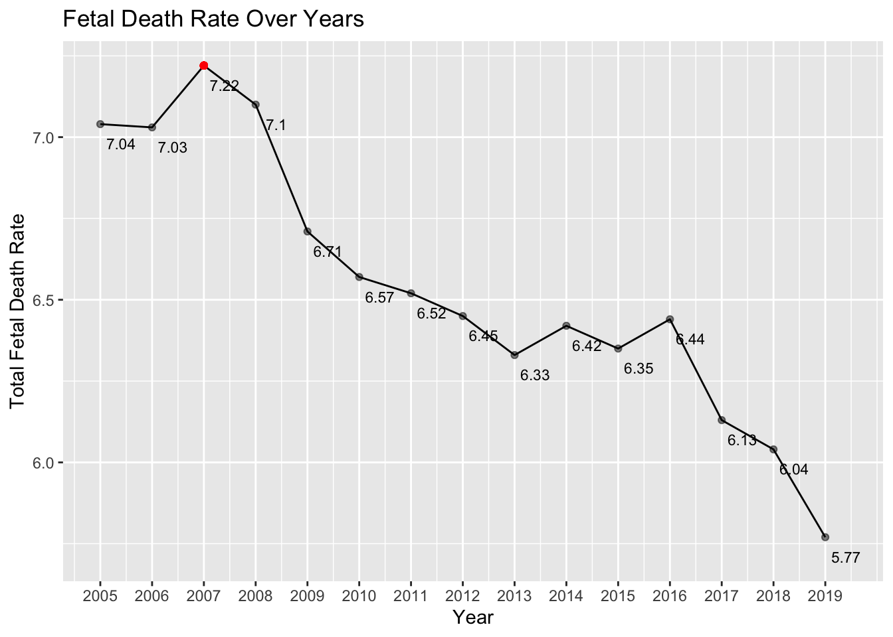
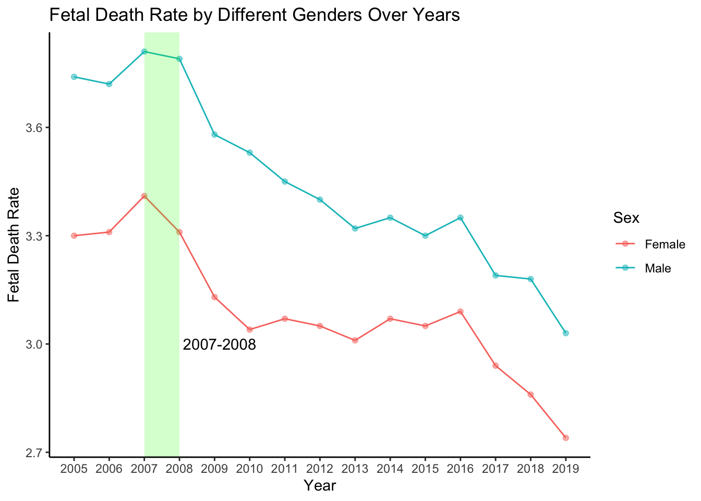

Chapter 5 Results
5.1 Fetal Deaths Over Years

First of all, let us take a look at how the fetal death rates changed between 2005 and 2019. We can clearly see a decreasing trend since 2007. Since we don’t have data before 2007, even though our graphs show there might be an increasing trend before 2007, we cannot simply make a conclusion. After further checking the movement by splitting the data into different genders, we found out that from 2007 to 2008, the female fetal death rate had a sharper decrease than male data did. We should notice that our graph shows higher death rates for male fetuses. This is not because male fetuses have a higher possibility of death but because male fetuses have higher birth rates in general. This decreasing trend is a good indicator, showing an improvement in national health. It is also unsurprising: with the development of technology and medical skills, we can now detect any potential factors that lead to fetus deaths more efficiently.